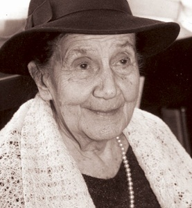

| Рођење и младост | Почетак уметничког рада | Њена литература | Одликовања и признања | Последње године и смрт |
Десанка Максимовић је била песникиња, приповедачица, романописац, писац за децу, а повремено се бавила превођењем, углавном поезије, са руског, словеначког, бугарског и француског. Објавила је педесетак књига поезије, песама и прозе за децу и омладину, приповедне, романсијерске и путописне прозе. Прве песме објавила је 1920. године у часопису „Мисао“. Њена поезија је и љубавна и патриотска, енергична, младалачка, озбиљна и осећајна.
